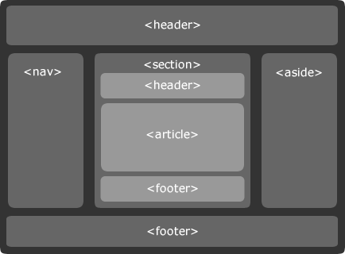
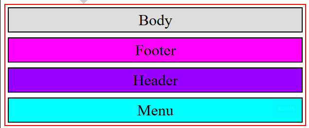
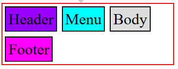
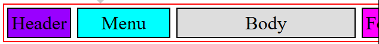
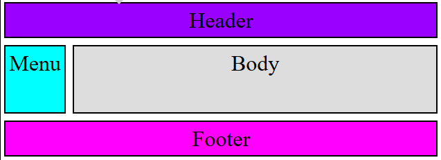

TP02 - La mise en pages
Format du rapport à télécharger
Dans l'enregistrement du rapport vous devez mettre votre nom après le numéro du TP, par exemple TP02gates.pdf
Introduction
Comment changer le design (le template en HTML) d'une page sans changer les informations de la page HTML
Voir le site de zen garden à cette
adresse
La mise en page est quelque chose de difficile à dominer car il existe de nombreux formats de visionnement, du smartphone au grand écran 4k. Voilà pourquoi nous allons suivre quelques principes introductifs. Comme vu dans le TD 01 notre problème principal est de centrer le bloc de texte sans centrer le texte. Mais il faut tenir compte aussi des menus et des encarts publicitaires ou autres. Pour ne pas mélanger les approches nous allons utiliser une technologie qui est récente mais aussi présente dans tous les navigateurs. On peut s'attendre à ce que les anciens navigateurs disparaissent à terme, car ils ne seront utilisés que sur les PC.
Exercice 1 - Structure de la maquette
Le format standard d'une age web peut etre presenté selon l'image ci-dessous
Avant le HTML 5 toutes les balises portaient le nom div. Depuis ont été rajoutées les balises sémantiques que nous avons dans l'image
Expliquez dans votre rapport pour quelles fonctions sont utilisées ces balises.
Pour des écrans plus petit l'organisation change, comme le montre l'image suivante :

Au regard de votre experience, Quelles critiques pourriez vous apporter à ce modéle ?
Exercice 2 - Comment mettre les éléments en ligne ?
Dans codepen, créez une structure de pade HTML et copiez le code suivant dans le body.
<div class="container"> <header class="header item">Header</header> <nav class="menuLeft item">Menu</nav> <section class="content item">Body</section> <footer class="footer item">Footer</footer> </div>
Dans la page css ajoutez le code suivant :
/************* Gestion de la présentation (layout) *************/
.container{
display:flex;/*Ajoutez votre commentaire */
flex-direction:row;/* */
}
/************* Gestion des styles *************/
.container{ border:solid 2px red; }
.item{ font-size:2em; margin:5px; padding:5px; border:solid 2px black; text-align:center;}
.header{ background-color: #9900FF;}
.menuLeft{ background-color: #00FFFF;}
.content{ background-color:#DDDDDD;}
.footer{ background-color:#FF00FF;}
- Dans le commentaire, expliquez à quoi correspond display:flex
- En utilisant l'inspecteur de code expliquez le rôle de la class item.
- Dans la propriété class du html, combien peut on détailler de classes ? Pourquoi ?
- Sauegardez votre travail dans une page nommée TP02.html et une page css02.css
Exercice 3 - Comment afficher les éléments en colonne ?
Remplacer dans la propriété flex-direction roow par column, et vous obtiendrez un affichage en colonne
- Quelles sont les quatre valeurs de flex-direction et à quoi correspondent-elles ?
Exercice 4 - Comment modifier l’ordre des éléments ?
Nous souhaiterions avoir l'élément body qui s'affiche en premier comme le montre l'image suivante.
Modifiez grâce à la propriété order les éléments header, menu, body, footer.
Exercice 5 - Comment gérer les sauts de ligne les éléments d’une ligne ?
Modifiez la classe container de façon à obtenir les valeurs suivantes :
- Que signifie wrapper ?
- A quoi correspond la propriété flex-wrap ?
- Quelles sont les valeurs quelles peuvent prendre et à quoi correspondent-elles ?
Exercice 6 - Comment répartir l’espace entre les éléments ?
Modifiez la classe container de façon à obtenir une taille du body deux fois plus grande que celle du menu :
- A quoi correspond la propriété flex:integer ?
- Comment sont évaluées les proportions ?
Exercice applicatif 1 - Template flexbox
Nous allons modifier le code HTML de façon à obtenir le template suivant :
Vous sauvegarderez votre travail dans une page nommée TP02ExAppli avec une structure HTML et copiez le code suivant dans le body.
<div class="container"> <header class="header item">Header</header> <div class="flexbody"> <nav class="menuLeft item">Menu</nav> <section class="content item"><p>Body</p></section> </div> <footer class="footer item">Footer</footer> </div>
- A quoi correspond un template ?
- Quelles modifications constatez vous par rapport à la version précédente ?
Dans la page css ajoutez le code suivant :
/************* Gestion de la présentation (layout) *************/
.container{
height:100vh;
display:flex;/*Ajoutez votre commentaire */
flex-direction:column;/* */
}
.flexbody{
flex-grow:1; /* */
display:flex; /* */
flex-direction:row; /* */
}
.content{
flex-grow:1; /* */
display:flex;/* */
justify-content: center;/* */
align-items:center;/* */
}
/************* Gestion des styles *************/
.container{ border:solid 2px red; }
.item{ font-size:2em; margin:5px; padding:5px; border:solid 2px black; text-align:center;}
.header{ background-color: #9900FF;}
.menuLeft{ background-color: #00FFFF;}
.content{ background-color:#DDDDDD;}
.footer{ background-color:#FF00FF;}
- Pourquoi ajouter display:flex dans la class content ?
- A quoi sert la propriété flex-grow ?
- A quoi sert la propriété justify-content, quelles sont ses valeurs possibles ?
- A quoi sert la propriété align-items, quelles sont ses valeurs possibles ?
- Pourquoi le mot Body subit des modifications alors que Menu n'en subi pas ?
- Donnez votre code css commenté ?